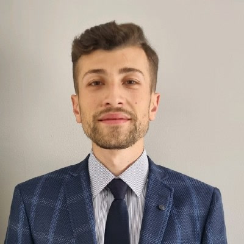

Hüseyin Haydar
Kurucu ortak · Peyzaj Mimarı · Ölçme Teknikeri
Harita, maden ve arazi modellemede ileri düzey saha deneyimi. Total station ve GNSS ile ölçüm, aplikasyon, halihazır ve imalat haritaları; 3B arazi modelleme, sondaj modellemesi, ocak tasarımı ve kübaj hesapları.
Uzmanlık
- Saha ölçümü
- Ocak tasarımı
- Kübaj hesabı
- Dron operasyonu
- Peyzaj ve restorasyon
Yazılımlar
- NETCAD
- AutoCAD
- Agisoft
- Pix4D
- Virtual Surveyor
- ArcGIS
- QGIS
- SketchUp
- Lumion
- Peyzaj Mimarlığı Lisans · Ankara Üniversitesi
- Kamu Yönetimi Lisans · Anadolu Üniversitesi
- İHA-1 Ticari Pilot · SHGM